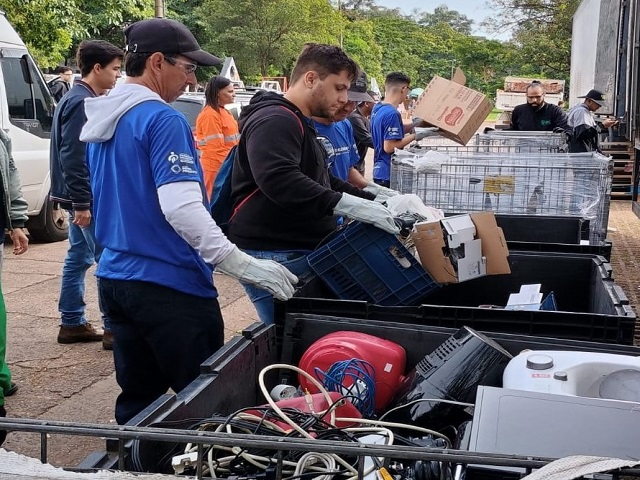
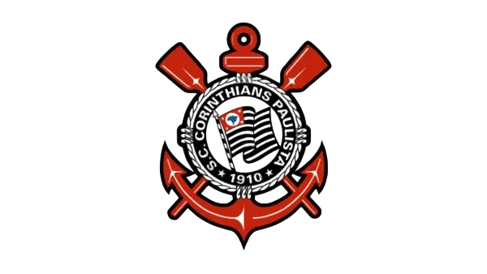

Meu nome é Matheus Henrique Aparecido Martins, tenho 18 anos e atualmente estudo na UNOESTE, no curso de Bacharelado em Sistemas de Informação. Escolhi essa área porque gosto muito de tecnologia e quero trabalhar com isso no futuro.
Meu objetivo é conseguir logo uma oportunidade para atuar na área de TI, seja como desenvolvedor ou em outra função ligada à informática, pois acredito que esse é o caminho que vai me permitir crescer profissionalmente.
Além dos estudos, gosto de aproveitar meu tempo livre jogando bola e andando de bicicleta, atividades que me ajudam a relaxar e equilibrar a rotina de estudos.
Além da faculdade, também busco aprender de forma prática por meio de cursos online. Até agora, participei de:
Participei do Mutirão de Lixo Eletrônico promovido pela UNOESTE, uma iniciativa que buscava conscientizar a comunidade sobre o descarte correto de equipamentos eletrônicos e reciclagem de materiais. Durante essa ação, contribuí ajudando na coleta, organização e separação dos materiais, além de orientar participantes sobre práticas sustentáveis.
Essa experiência foi muito enriquecedora, pois me permitiu perceber a importância do trabalho coletivo e do impacto positivo que pequenas ações podem gerar na sociedade. Também desenvolvi habilidades de comunicação, organização e responsabilidade, que aplico diariamente nos estudos e projetos pessoais.
Desde pequeno sempre tive interesse em computadores, mesmo que no começo fosse apenas para jogar ou acessar a internet. Com o tempo, percebi que queria entender como as coisas funcionavam por trás das telas. Foi essa curiosidade que me fez escolher o curso de Sistemas de Informação. Hoje estou aprendendo HTML e CSS e cada exercício que faço me deixa mais motivado a seguir nessa área. Meu objetivo é evoluir aos poucos, superar minhas dificuldades e, no futuro, poder trabalhar em uma empresa de tecnologia ou até mesmo desenvolver meus próprios projetos.
Minha rotina é bastante equilibrada entre estudos e lazer. Durante a semana, dedico boa parte do meu tempo à faculdade e às tarefas relacionadas ao curso. Procuro praticar os exercícios de HTML e CSS em casa, mesmo quando tenho dificuldades, porque acredito que é praticando que realmente se aprende. Nos momentos livres gosto de jogar bola, andar de bicicleta e também ouvir música, o que me ajuda a relaxar e recarregar as energias. Tento manter disciplina para organizar minhas tarefas e sempre encontro um tempo para fazer aquilo que gosto.
Atualmente estou estudando HTML e CSS, praticando com exercícios e pequenos projetos para entender como criar páginas web do zero. Até agora, minhas atividades incluem:
Cada atividade realizada me ajuda a entender melhor o funcionamento das tecnologias e a ganhar confiança para avançar. Meu objetivo é continuar praticando todos os dias, aprender novas linguagens como JavaScript, desenvolver projetos próprios e, no futuro, conseguir meu primeiro estágio ou emprego na área de TI.
Além dos estudos técnicos, também estou aprimorando habilidades importantes para qualquer profissional, como organização, disciplina e dedicação. Mesmo sendo iniciante, acredito que a prática constante e a vontade de aprender são os caminhos para evoluir rapidamente.
| Habilidade | Nível |
|---|---|
| HTML | Básico |
| CSS | Básico |
| Organização | Bom |
| Trabalho em Equipe | Bom |
| Dedicação | Bom |
| Comunicação | Precisa melhorar |
Além de habilidades técnicas, também busco desenvolver competências pessoais importantes para qualquer área:
Além das habilidades técnicas, desenvolvo competências que considero essenciais para qualquer profissional:
Além da minha paixão por tecnologia, também tenho experiência com música. Algumas das atividades que já participei incluem:
Essas experiências me ajudaram a desenvolver disciplina, paciência e trabalho em equipe, habilidades importantes tanto na música quanto na vida profissional.
Prefiro estudar de madrugada, quando está mais silencioso. Costumo praticar bastante os exercícios em HTML e CSS até fixar o conteúdo.
Sou apaixonado por futebol e gosto muito de acompanhar os jogos do meu time. Nos finais de semana, sempre que posso, assisto partidas e torço junto com os amigos e família.
Meu time favorito: Corinthians
📧 Email: matheushenriquematheus696@gmail.com
📱 WhatsApp: (18) 99769-3479
📸 Instagram: @matheush_696
Aluno: Matheus Henrique Aparecido Martins - RA: 262517027